Cell-cell communication workflow
Source:vignettes/cell-cell-communication-workflow.Rmd
cell-cell-communication-workflow.RmdThis article shows a practical first-pass workflow for cell-cell
communication analysis in scop: prepare a cell-type
annotation, run ligand-receptor inference, inspect sender-receiver
summaries, then focus on specific ligands, receptors, pathways, or
downstream targets only after the global result looks stable.
This workflow starts from single-cell expression data. For spatially
constrained communication, use RunSpatialCellChat() and the
spatial workflow article. SpatialCellChat is stored as a distinct CCC
method because its distance constraint and spatial permutation basis are
not interchangeable with non-spatial CellChat scores.
The examples below use the bundled pancreas_sub data and
run the R-side CellChat and LIANA wrappers directly when those optional
packages are available. CellphoneDB is intentionally not used here
because it requires a Python environment and a CellPhoneDB database.
scop keeps the workflow unified in three layers:
| Layer | Entry point | Purpose |
|---|---|---|
| Result tables |
RunCCC() output |
Store standardized long_table, pair_table,
and method status in srt@tools$CCC. |
| Heatmap layer | CCCHeatmap() |
Matrix, dot, tile, sample, pathway, and differential heatmap views. |
| Statistical layer | CCCStatPlot() |
Ranked interactions, distributions, pathway summaries, and comparison statistics. |
| Network layer | CCCNetworkPlot() |
Sender-receiver networks, pathway networks, embedding networks, and focused ligand-receptor flow. |
The plots in this article summarize inferred ligand-receptor evidence. A high score means the selected method found strong expression-based support for a sender ligand, receiver receptor, and sender-receiver context. It should not be read as a direct measurement of secreted protein amount, physical distance, or causal signaling.
Prepare the Object
Start with a normalized Seurat object and a metadata column that
represents the cell identities used as sender and receiver groups. For
the bundled pancreas example, CellType is the coarse
annotation and SubCellType is the finer annotation.
library(scop)
#> ⬢ . ⬡ ⬢ .
#> _____ _________ ____
#> / ___// ___/ __ ./ __ .
#> (__ )/ /__/ /_/ / /_/ /
#> /____/ .___/.____/ .___/
#> /_/
#> ⬢ . ⬡ . ⬢
#> ------------------------------------------------------------
#> Version: 0.8.9 (2026-07-20 update)
#> Website: https://mengxu98.github.io/scop/
#>
#> Python environment initialization is disabled
#> To enable it, set: options(scop_env_init = TRUE)
#>
#> The message can be suppressed by:
#> suppressPackageStartupMessages(library(scop))
#> or options(log_message.verbose = FALSE)
#> ------------------------------------------------------------
library(ggplot2)
data(pancreas_sub)
pancreas_sub <- standard_scop(pancreas_sub, verbose = FALSE)
#> ℹ [2026-07-28 03:36:23] Skip `log1p()` because `layer = data` is not "counts"
table(pancreas_sub$CellType)
#>
#> Ductal Endocrine Ngn3-high-EP Ngn3-low-EP Pre-endocrine
#> 253 355 169 67 156
table(pancreas_sub$SubCellType)
#>
#> Alpha Beta Delta Ductal Epsilon
#> 121 174 20 253 40
#> Ngn3-high-EP Ngn3-low-EP Pre-endocrine
#> 169 67 156Use the same visual settings across the article so that heatmaps, statistical summaries, and network plots can be compared without changing palettes or text scale.
ccc_cell_pal <- c(
"Ductal" = "#4E79A7",
"Endocrine" = "#E15759",
"Ngn3-high-EP" = "#59A14F",
"Ngn3-low-EP" = "#76B7B2",
"Pre-endocrine" = "#F28E2B"
)
ccc_value_pal <- c("#2C5C85", "#8FBBD9", "#F7F7F7", "#F2B38F", "#B9473D")
ccc_theme_args <- list(base_size = 11)Before communication analysis, check whether groups have enough cells
or whether some labels should be merged. CCC methods compare group-level
expression, so unstable labels usually become noisy sender-receiver
edges. The bundled pancreas_sub object is used as-is in
this article.
cell_counts <- sort(table(pancreas_sub$CellType), decreasing = TRUE)
cell_counts
#>
#> Endocrine Ductal Ngn3-high-EP Pre-endocrine Ngn3-low-EP
#> 355 253 169 156 67
pancreas_ccc <- pancreas_sub
pancreas_ccc$CellType <- droplevels(factor(pancreas_ccc$CellType))
table(pancreas_ccc$CellType)
#>
#> Ductal Endocrine Ngn3-high-EP Ngn3-low-EP Pre-endocrine
#> 253 355 169 67 156Run a CCC Screen
RunCCC() is the shortest path when the goal is to
compare the same object with several ligand-receptor scoring methods. In
this article, it runs CellChat and LIANA when both optional R backends
are installed, then rebuilds the unified srt@tools$CCC
tables for common downstream plots.
pancreas_ccc <- RunCCC(
pancreas_ccc,
group.by = "CellType",
methods = c("CellChat", "LIANA"),
method_params = list(
CellChat = list(species = "Mus_musculus", min.cells = 5),
LIANA = list(
method = c("natmi", "connectome"),
resource = "Consensus",
min_cells = 5
)
),
skip_failed = TRUE,
thresh = 0.05,
verbose = FALSE
)
#> [1] "Create a CellChat object from a data matrix"
#> Set cell identities for the new CellChat object
#> The cell groups used for CellChat analysis are Ductal, Endocrine, Ngn3-high-EP, Ngn3-low-EP, Pre-endocrine
#> The number of highly variable ligand-receptor pairs used for signaling inference is 841
#> triMean is used for calculating the average gene expression per cell group.
#> [1] ">>> Run CellChat on sc/snRNA-seq data <<< [2026-07-28 03:36:37.451636]"
#> [1] ">>> CellChat inference is done. Parameter values are stored in `object@options$parameter` <<< [2026-07-28 03:37:11.739716]"
#> Warning: `invoke()` is deprecated as of rlang 0.4.0.
#> Please use `exec()` or `inject()` instead.
#> This warning is displayed once every 8 hours.
#> Warning in .local(x, ...): 'librarySizeFactors' is deprecated.
#> Use 'scrapper::centerSizeFactors' instead.
#> See help("Deprecated")
#> Warning in .local(x, ...): 'librarySizeFactors' is deprecated.
#> Use 'scrapper::centerSizeFactors' instead.
#> See help("Deprecated")
#> Warning in .local(x, ...): 'librarySizeFactors' is deprecated.
#> Use 'scrapper::centerSizeFactors' instead.
#> See help("Deprecated")
#> Warning in .local(x, ...): 'librarySizeFactors' is deprecated.
#> Use 'scrapper::centerSizeFactors' instead.
#> See help("Deprecated")
#> Warning in .local(x, ...): 'librarySizeFactors' is deprecated.
#> Use 'scrapper::centerSizeFactors' instead.
#> See help("Deprecated")
#> Warning in .local(x, ...): 'librarySizeFactors' is deprecated.
#> Use 'scrapper::centerSizeFactors' instead.
#> See help("Deprecated")
#> Warning in .local(x, ...): 'librarySizeFactors' is deprecated.
#> Use 'scrapper::centerSizeFactors' instead.
#> See help("Deprecated")
#> Warning in .local(x, ...): 'librarySizeFactors' is deprecated.
#> Use 'scrapper::centerSizeFactors' instead.
#> See help("Deprecated")
#> Warning in .local(x, ...): 'librarySizeFactors' is deprecated.
#> Use 'scrapper::centerSizeFactors' instead.
#> See help("Deprecated")
#> Warning in .local(x, ...): 'librarySizeFactors' is deprecated.
#> Use 'scrapper::centerSizeFactors' instead.
#> See help("Deprecated")
#> Warning in .summarize_assay_by_group(assay(x, assay.type), ...): 'summarizeAssayByGroup' is deprecated.
#> Use 'scrapper::aggregateAcrossCells' or 'beachmat::tatami.sums.by.group' instead.
#> Warning in .summarize_assay_by_group(assay(x, assay.type), ...): 'summarizeAssayByGroup' is deprecated.
#> Use 'scrapper::aggregateAcrossCells' or 'beachmat::tatami.sums.by.group' instead.
#> Warning in .findMarkers(assay(x, i = assay.type), ...): 'findMarkers' is deprecated.
#> Use 'scrapper::scoreMarkers.se' instead.
#> See help("Deprecated")
#> Warning in .local(x, ...): 'pairwiseWilcox' is deprecated.
#> See help("Deprecated")
#> Warning in combineMarkers(fit$statistics, fit$pairs, pval.type = pval.type, : 'combineMarkers' is deprecated.
#> Use 'scrapper::summarizeEffects' instead.
#> See help("Deprecated")
#> Warning: There were 2 warnings in `mutate()`.
#> The first warning was:
#> ℹ In argument: `ligand.prop = min(ligand.prop)`.
#> Caused by warning in `min()`:
#> ! no non-missing arguments to min; returning Inf
#> ℹ Run `dplyr::last_dplyr_warnings()` to see the 1 remaining warning.
#> Warning: There was 1 warning in `mutate()`.
#> ℹ In argument: `ligand.expr.min = min(.data[["ligand.expr"]])`.
#> Caused by warning in `min()`:
#> ! no non-missing arguments to min; returning Inf
#> Warning: There was 1 warning in `mutate()`.
#> ℹ In argument: `receptor.expr.min = min(.data[["receptor.expr"]])`.
#> Caused by warning in `min()`:
#> ! no non-missing arguments to min; returning Inf
#> Warning: There were 2 warnings in `mutate()`.
#> The first warning was:
#> ℹ In argument: `ligand.prop = min(ligand.prop)`.
#> Caused by warning in `min()`:
#> ! no non-missing arguments to min; returning Inf
#> ℹ Run `dplyr::last_dplyr_warnings()` to see the 1 remaining warning.
#> Warning: There was 1 warning in `mutate()`.
#> ℹ In argument: `ligand.scaled.min = min(.data[["ligand.scaled"]])`.
#> Caused by warning in `min()`:
#> ! no non-missing arguments to min; returning Inf
#> Warning: There was 1 warning in `mutate()`.
#> ℹ In argument: `receptor.scaled.min = min(.data[["receptor.scaled"]])`.
#> Caused by warning in `min()`:
#> ! no non-missing arguments to min; returning InfCheck the run status and standardized result tables before plotting.
Use pancreas_ccc@tools$CCC$long_table for ligand-receptor
questions and pancreas_ccc@tools$CCC$pair_table for
sender-receiver summaries. The long table is the most detailed layer:
one row per method-specific ligand-receptor sender-receiver event. The
pair table aggregates those rows to cell-type pairs, so it is useful for
overview plots but less useful for naming specific biology.
pancreas_ccc@tools$RunCCC$status
#> method status elapsed message
#> 1 CellChat completed 38.908 <NA>
#> 2 LIANA completed 5.739 <NA>
pancreas_ccc@tools$RunCCC$completed_methods
#> [1] "CellChat" "LIANA"
ccc_long <- pancreas_ccc@tools$CCC$long_table
ccc_pair <- pancreas_ccc@tools$CCC$pair_table
head(ccc_long)
#> sender receiver ligand receptor score pvalue
#> 1 Ductal Ngn3-low-EP Bmp7 BMPR1A_ACVR2B 0.0013409975 0
#> 2 Ngn3-low-EP Ngn3-low-EP Bmp7 BMPR1A_ACVR2B 0.0010170280 0
#> 3 Ductal Ngn3-low-EP Wnt7b FZD2_LRP6 0.0010408195 0
#> 4 Ngn3-low-EP Ngn3-low-EP Wnt7b FZD2_LRP6 0.0009996108 0
#> 5 Ductal Ductal Igf2 Igf1r 0.0031658123 0
#> 6 Ngn3-low-EP Ductal Igf2 Igf1r 0.0036996124 0
#> interaction_name interaction_name_2 pathway_name annotation
#> 1 BMP7_BMPR1A_ACVR2B Bmp7 - (Bmpr1a+Acvr2b) BMP Secreted Signaling
#> 2 BMP7_BMPR1A_ACVR2B Bmp7 - (Bmpr1a+Acvr2b) BMP Secreted Signaling
#> 3 WNT7B_FZD2_LRP6 Wnt7b - (Fzd2+Lrp6) WNT Secreted Signaling
#> 4 WNT7B_FZD2_LRP6 Wnt7b - (Fzd2+Lrp6) WNT Secreted Signaling
#> 5 IGF2_IGF1R Igf2 - Igf1r IGF Secreted Signaling
#> 6 IGF2_IGF1R Igf2 - Igf1r IGF Secreted Signaling
#> evidence dataset interaction_label classification
#> 1 KEGG: mmu04350; PMID:26893264 ALL Bmp7 - (Bmpr1a+Acvr2b) BMP
#> 2 KEGG: mmu04350; PMID:26893264 ALL Bmp7 - (Bmpr1a+Acvr2b) BMP
#> 3 KEGG: mmu04310; PMID: 23209147 ALL Wnt7b - (Fzd2+Lrp6) WNT
#> 4 KEGG: mmu04310; PMID: 23209147 ALL Wnt7b - (Fzd2+Lrp6) WNT
#> 5 PMID: 14604834 ALL Igf2 - Igf1r IGF
#> 6 PMID: 14604834 ALL Igf2 - Igf1r IGF
#> pair_lr ligand_display receptor_display
#> 1 Bmp7 - (Bmpr1a+Acvr2b) Bmp7 BMPR1A_ACVR2B
#> 2 Bmp7 - (Bmpr1a+Acvr2b) Bmp7 BMPR1A_ACVR2B
#> 3 Wnt7b - (Fzd2+Lrp6) Wnt7b FZD2_LRP6
#> 4 Wnt7b - (Fzd2+Lrp6) Wnt7b FZD2_LRP6
#> 5 Igf2 - Igf1r Igf2 Igf1r
#> 6 Igf2 - Igf1r Igf2 Igf1r
#> interaction_display significant neglog10_pvalue method
#> 1 Bmp7 - (Bmpr1a+Acvr2b) TRUE NA CellChat
#> 2 Bmp7 - (Bmpr1a+Acvr2b) TRUE NA CellChat
#> 3 Wnt7b - (Fzd2+Lrp6) TRUE NA CellChat
#> 4 Wnt7b - (Fzd2+Lrp6) TRUE NA CellChat
#> 5 Igf2 - Igf1r TRUE NA CellChat
#> 6 Igf2 - Igf1r TRUE NA CellChat
head(ccc_pair)
#> sender receiver sum mean max count
#> 1 Ductal Ductal 0.90457295 0.026605087 0.21509356 34
#> 2 Ductal Endocrine 0.30213984 0.037767480 0.22022319 8
#> 3 Ductal Ngn3-high-EP 0.48601174 0.048601174 0.21263661 10
#> 4 Ductal Ngn3-low-EP 0.94494524 0.024229365 0.21761259 39
#> 5 Ductal Pre-endocrine 0.41503376 0.046114863 0.19786975 9
#> 6 Endocrine Ductal 0.05505986 0.009176643 0.02438429 6
long_df <- pancreas_ccc@tools$CCC$long_table
pair_df <- pancreas_ccc@tools$CCC$pair_table
pair_df[order(pair_df$sum, decreasing = TRUE), ][1:6, ]
#> sender receiver sum mean max count
#> 4 Ductal Ngn3-low-EP 0.9449452 0.02422937 0.2176126 39
#> 19 Ngn3-low-EP Ngn3-low-EP 0.9418555 0.02616265 0.2166258 36
#> 1 Ductal Ductal 0.9045730 0.02660509 0.2150936 34
#> 16 Ngn3-low-EP Ductal 0.8484017 0.03030006 0.2141150 28
#> 14 Ngn3-high-EP Ngn3-low-EP 0.5187228 0.02881793 0.2011053 18
#> 3 Ductal Ngn3-high-EP 0.4860117 0.04860117 0.2126366 10
top_lr <- long_df[order(long_df$score, decreasing = TRUE), ]
top_lr[1:6, c("method", "sender", "receiver", "ligand", "receptor", "score", "pvalue")]
#> method sender receiver ligand receptor score pvalue
#> 184 CellChat Ductal Endocrine Ppia Bsg 0.2202232 0
#> 185 CellChat Ngn3-low-EP Endocrine Ppia Bsg 0.2192279 0
#> 188 CellChat Ductal Ngn3-low-EP Ppia Bsg 0.2176126 0
#> 189 CellChat Ngn3-low-EP Ngn3-low-EP Ppia Bsg 0.2166258 0
#> 182 CellChat Ductal Ductal Ppia Bsg 0.2150936 0
#> 183 CellChat Ngn3-low-EP Ductal Ppia Bsg 0.2141150 0Global Communication Maps
Start with the heatmap layer. A sender-receiver heatmap shows which
cell-type pairs have many or strong inferred interactions. In
aggregation views, sum summarizes the selected interaction
score across retained ligand-receptor events for a sender-receiver pair.
Use it to rank cell pairs, then return to the long table to inspect the
individual ligands and receptors behind the aggregate signal.
CCCHeatmap(
pancreas_ccc,
method = "CCC",
plot_type = "heatmap",
display_by = "aggregation",
value = "sum",
top_n = 30,
add_text = TRUE,
cluster_rows = TRUE,
cluster_columns = TRUE,
value_palette = "RdBu",
value_palcolor = ccc_value_pal,
cell_palcolor = ccc_cell_pal,
font.size = 10,
theme_args = ccc_theme_args
)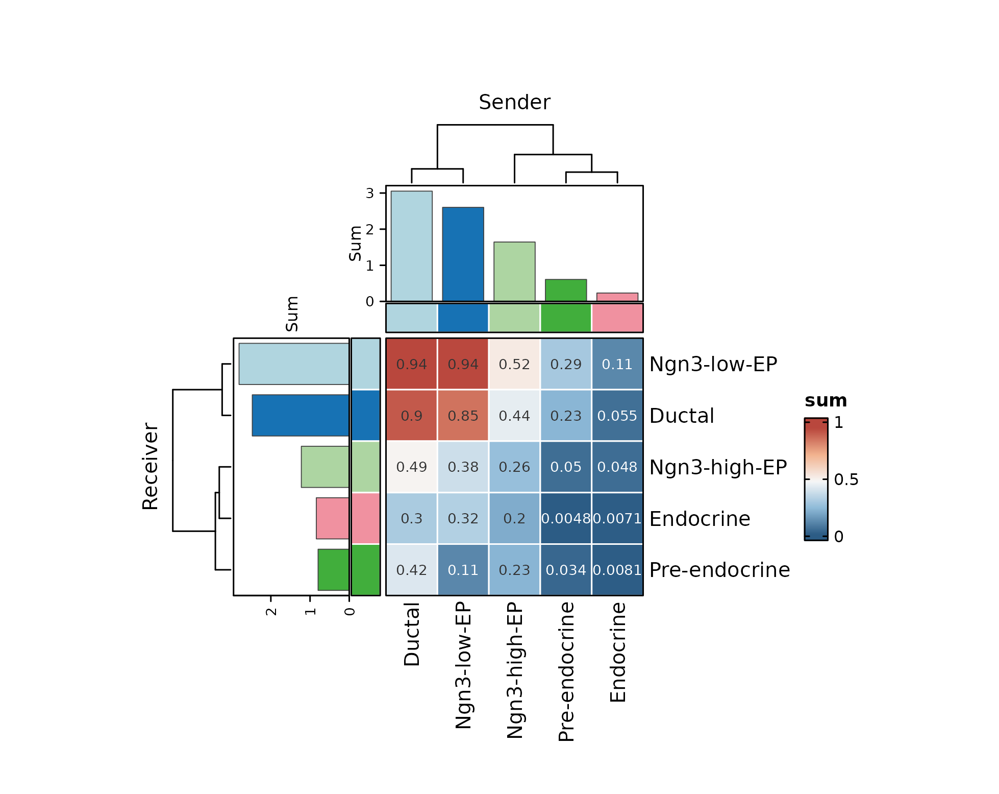
A focused matrix keeps a single sender or receiver readable while preserving interaction names. In static documentation, use small multiples or filters instead of drawing every significant pair at once.
CCCHeatmap(
pancreas_ccc,
method = "CCC",
plot_type = "dot",
display_by = "interaction",
sender.use = "Ductal",
top_n = 12,
value_palette = "RdBu",
value_palcolor = ccc_value_pal,
cell_palcolor = ccc_cell_pal,
font.size = 9,
legend.position = "bottom",
legend.direction = "horizontal",
theme_args = ccc_theme_args
)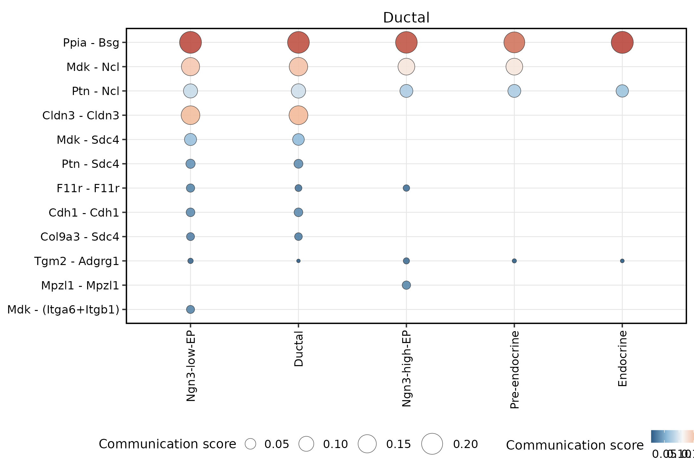
Compare the same interaction-level view from the receiver side. This is useful when a sender-dominant dot plot hides receiver-specific specificity.
CCCHeatmap(
pancreas_ccc,
method = "CCC",
plot_type = "dot",
display_by = "interaction",
receiver.use = "Endocrine",
top_n = 12,
value_palette = "RdBu",
value_palcolor = ccc_value_pal,
cell_palcolor = ccc_cell_pal,
font.size = 9,
legend.position = "bottom",
legend.direction = "horizontal",
theme_args = ccc_theme_args
)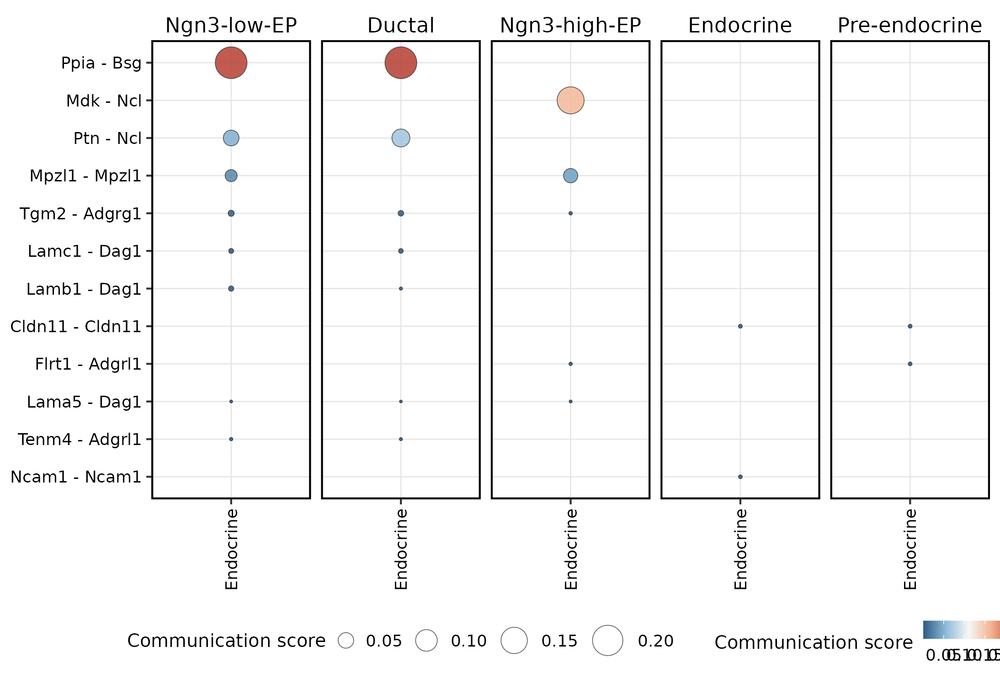
For pathway-level questions, use pathway bubbles before drawing a
network. Keep this panel compact in the article because the
pathway-specific interaction labels are long. Here a pathway such as
COLLAGEN is a ligand-receptor signaling family from the CCC
method/resource, not a GO or KEGG enrichment term.
CCCHeatmap(
pancreas_ccc,
method = "CCC",
plot_type = "pathway_bubble",
display_by = "interaction",
signaling = "COLLAGEN",
top_n = 6,
value_palette = "RdBu",
value_palcolor = ccc_value_pal,
cell_palcolor = ccc_cell_pal,
font.size = 8,
legend.position = "bottom",
legend.direction = "horizontal",
theme_args = ccc_theme_args
)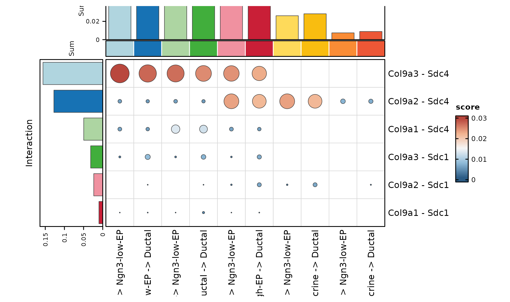
Statistical Views
Use the statistical layer to decide whether a signal is dominated by
a few ligand-receptor pairs or spread across many pairs.
pvalue is method-specific and should be interpreted with
the method and resource used to generate it. When several CCC methods
are combined, use the standardized table for ranking and visualization,
but keep method provenance in the report.
CCCStatPlot(
pancreas_ccc,
method = "CCC",
plot_type = "bar",
display_by = "interaction",
top_n = 14,
cell_palcolor = ccc_cell_pal,
link_palcolor = ccc_cell_pal,
font.size = 10,
legend.position = "bottom",
legend.direction = "horizontal",
theme_args = ccc_theme_args
)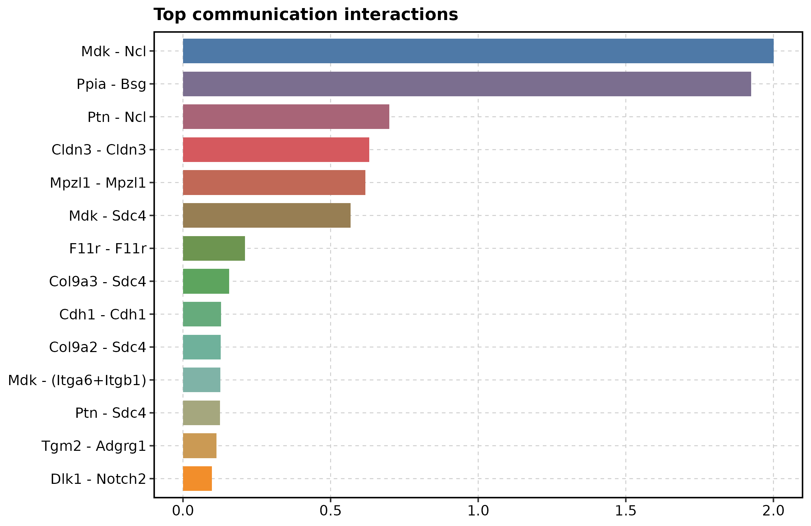
A flow plot is a compact companion to the bar plot: it shows which senders, ligand-receptor interactions, and receivers explain the top-ranked signal. For the article, use a small interaction-level flow with direct labels instead of a dense alluvial panel.
CCCNetworkPlot(
pancreas_ccc,
method = "CCC",
plot_type = "sigmoid",
display_by = "interaction",
top_n = 5,
edge_alpha = 0.5,
edge_size = c(0.25, 1),
node_size = 3.8,
cell_palcolor = ccc_cell_pal,
link_palcolor = ccc_cell_pal,
label = TRUE,
label.size = 3.2,
label.fg = "black",
label.bg = "white",
label.bg.r = 0.12,
font.size = 9,
legend.position = "none",
theme_args = ccc_theme_args
)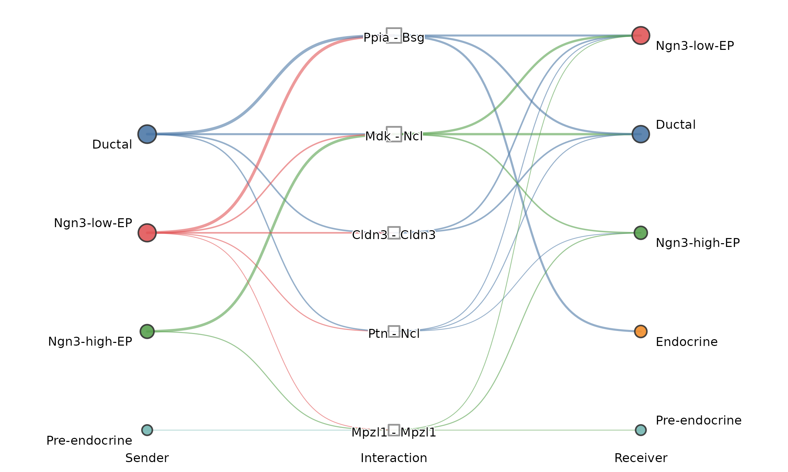
Distribution plots show whether each sender has consistent receiver-side scores or only a few high-scoring outliers. The legend glyphs are simplified so the legend reads as colored categories rather than mini violins.
p_violin <- CCCStatPlot(
pancreas_ccc,
method = "CCC",
plot_type = "violin",
facet_by = "sender",
top_n = 12,
cell_palcolor = ccc_cell_pal,
font.size = 9,
legend.position = "right",
theme_args = ccc_theme_args
)
p_violin +
ggplot2::guides(
color = ggplot2::guide_legend(
override.aes = list(shape = 16, size = 4, linetype = 0, alpha = 1)
),
fill = ggplot2::guide_legend(
override.aes = list(shape = 22, size = 4, linetype = 0, alpha = 1)
)
) +
ggplot2::theme(
legend.key.height = grid::unit(0.35, "cm"),
legend.key.width = grid::unit(0.35, "cm")
)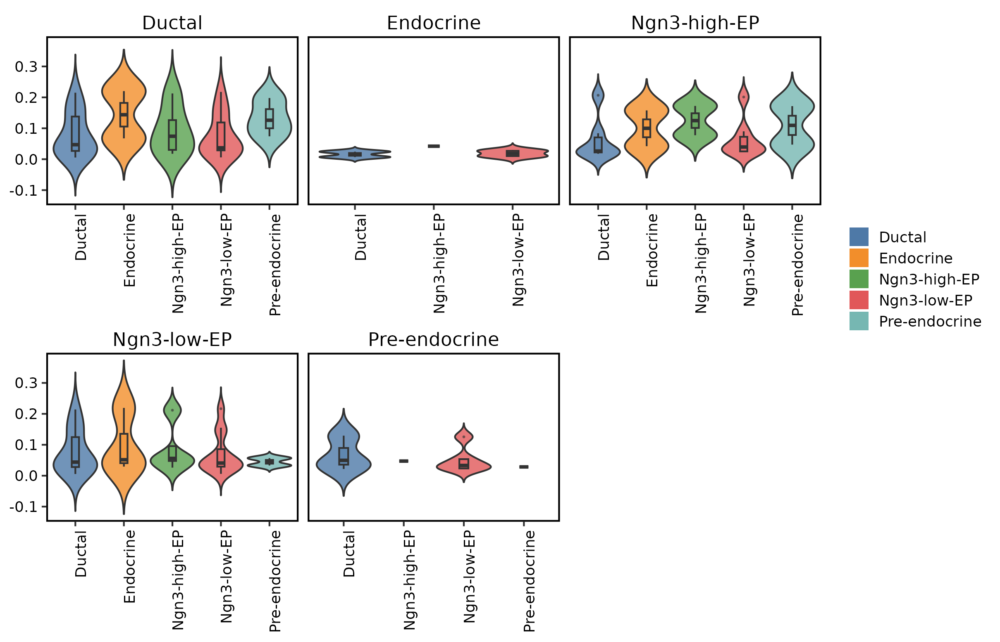
For a global sender-receiver distribution, the box plot is often more compact than faceted violins.
CCCStatPlot(
pancreas_ccc,
method = "CCC",
plot_type = "box",
top_n = 12,
cell_palcolor = ccc_cell_pal,
font.size = 9,
legend.position = "bottom",
legend.direction = "horizontal",
theme_args = ccc_theme_args
)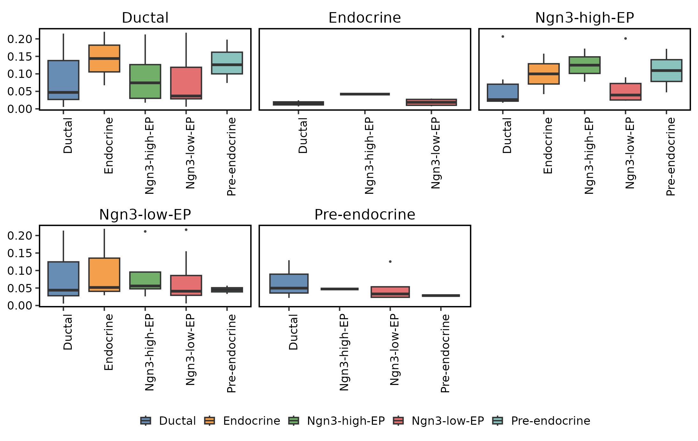
Network Views
Use the network layer after the global heatmap identifies the cell groups of interest. Aggregate views summarize sender-receiver communication; interaction views show ligand-receptor flow. The compact arrow view is usually easier to read than a dense circle network in an article. Network edge width encodes the selected summary score, and arrows encode sender to receiver direction. The direction is inferred from ligand and receptor group assignment, not from time-course causality.
CCCNetworkPlot(
pancreas_ccc,
method = "CCC",
plot_type = "arrow",
display_by = "aggregation",
value = "sum",
top_n = 12,
directed = TRUE,
edge_line = "curved",
edge_curvature = 0.18,
edge_alpha = 0.55,
edge_size = c(0.25, 1.4),
node_size = 8,
cell_palcolor = ccc_cell_pal,
link_palcolor = ccc_cell_pal,
font.size = 10,
theme_args = ccc_theme_args
)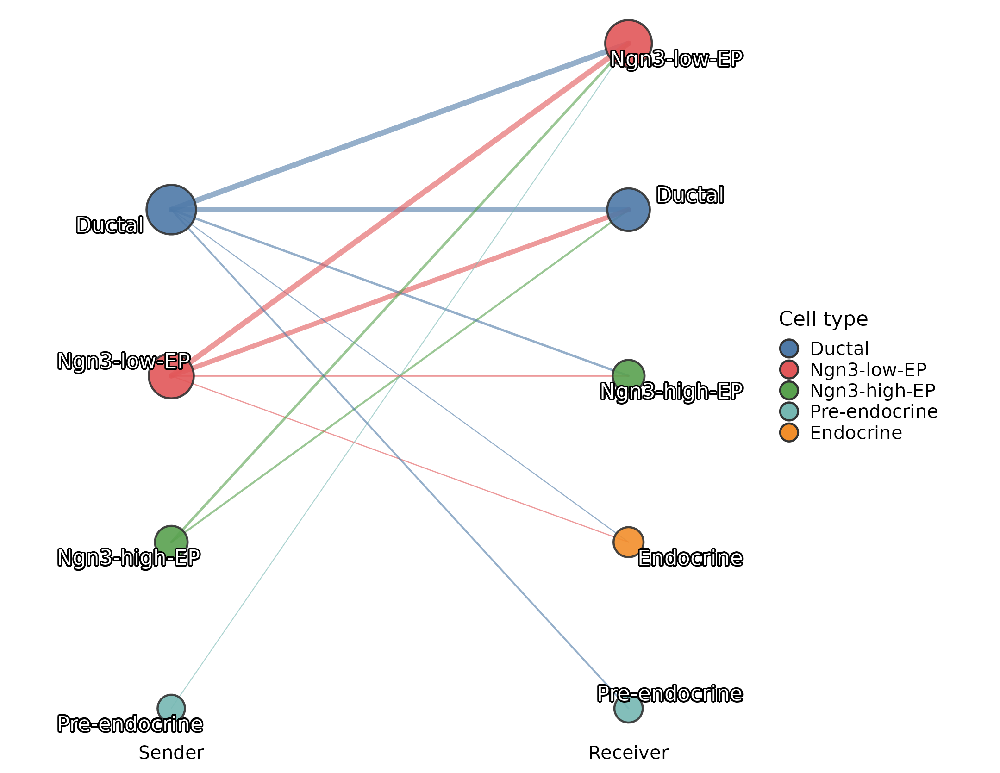
The sigmoid flow view uses the same sender-receiver table but lays it out as columns. It is usually cleaner than a circle when labels are long.
CCCNetworkPlot(
pancreas_ccc,
method = "CCC",
plot_type = "sigmoid",
display_by = "aggregation",
value = "sum",
top_n = 10,
edge_alpha = 0.55,
edge_size = c(0.25, 1.2),
node_size = 4,
cell_palcolor = ccc_cell_pal,
link_palcolor = ccc_cell_pal,
font.size = 10,
legend.position = "bottom",
legend.direction = "horizontal",
theme_args = ccc_theme_args
)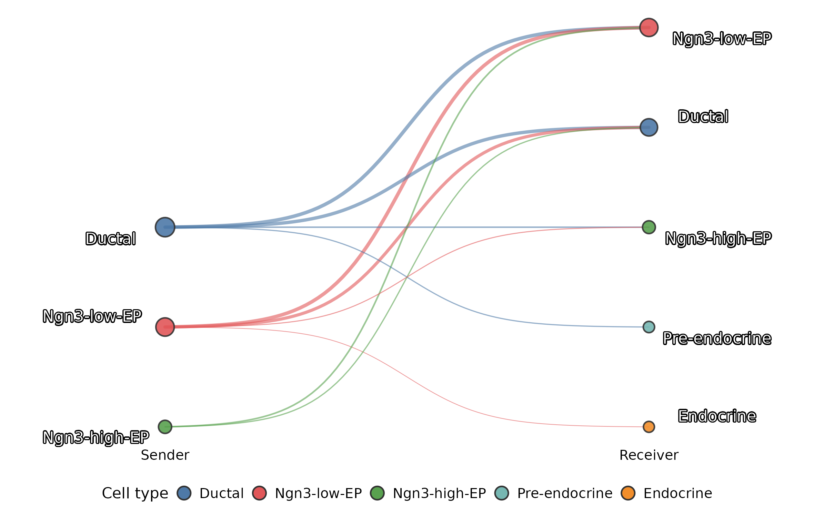
The embedding network overlays sender-receiver links on the cell embedding. This helps distinguish strong communication between nearby cell states from long-range links across transcriptionally distant groups.
CCCNetworkPlot(
pancreas_ccc,
method = "CCC",
plot_type = "embedding_network",
group.by = "CellType",
reduction = "Standardumap",
display_by = "aggregation",
value = "sum",
top_n = 12,
edge_alpha = 0.45,
edge_size = c(0.15, 0.9),
node_size = 6,
cell_palcolor = ccc_cell_pal,
link_palcolor = ccc_cell_pal,
font.size = 10,
label = TRUE,
label_repel = TRUE,
label.size = 3,
theme_args = ccc_theme_args
)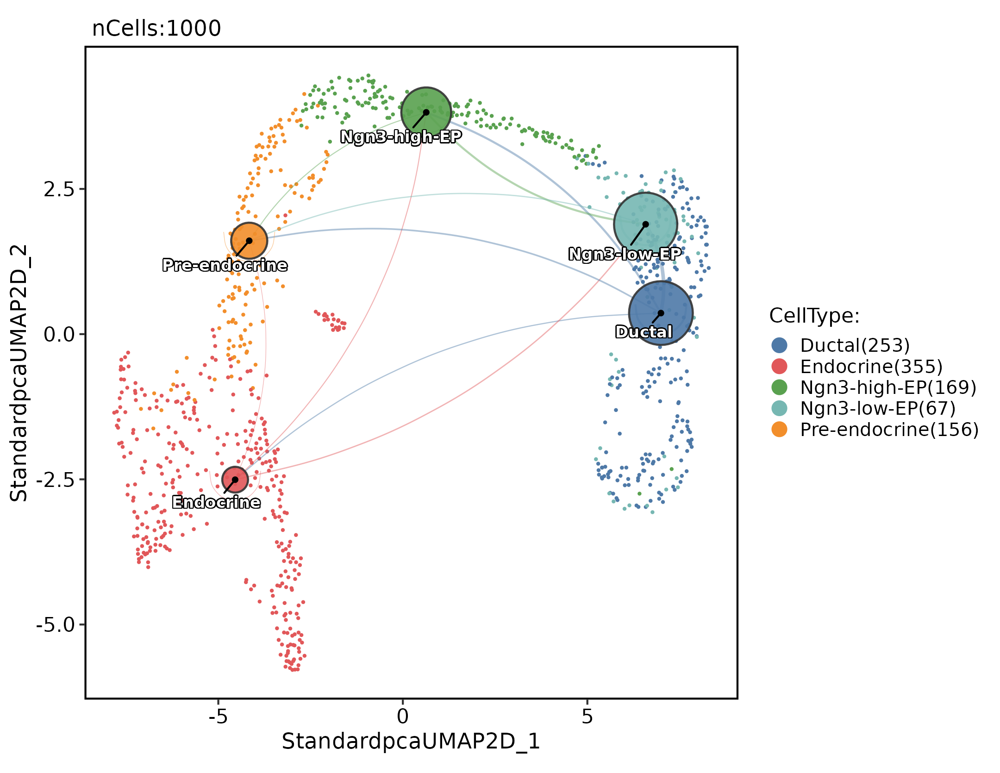
For pathway-aware results, focus on one pathway at a time. This avoids the label overlap that appears when all significant sender-receiver links are drawn in one circle.
CCCNetworkPlot(
pancreas_ccc,
method = "CCC",
plot_type = "pathway",
signaling = "COLLAGEN",
display_by = "aggregation",
value = "sum",
top_n = 8,
node_size = 7,
cell_palcolor = ccc_cell_pal,
link_palcolor = ccc_cell_pal,
font.size = 9,
label.size = 3,
theme_args = ccc_theme_args
)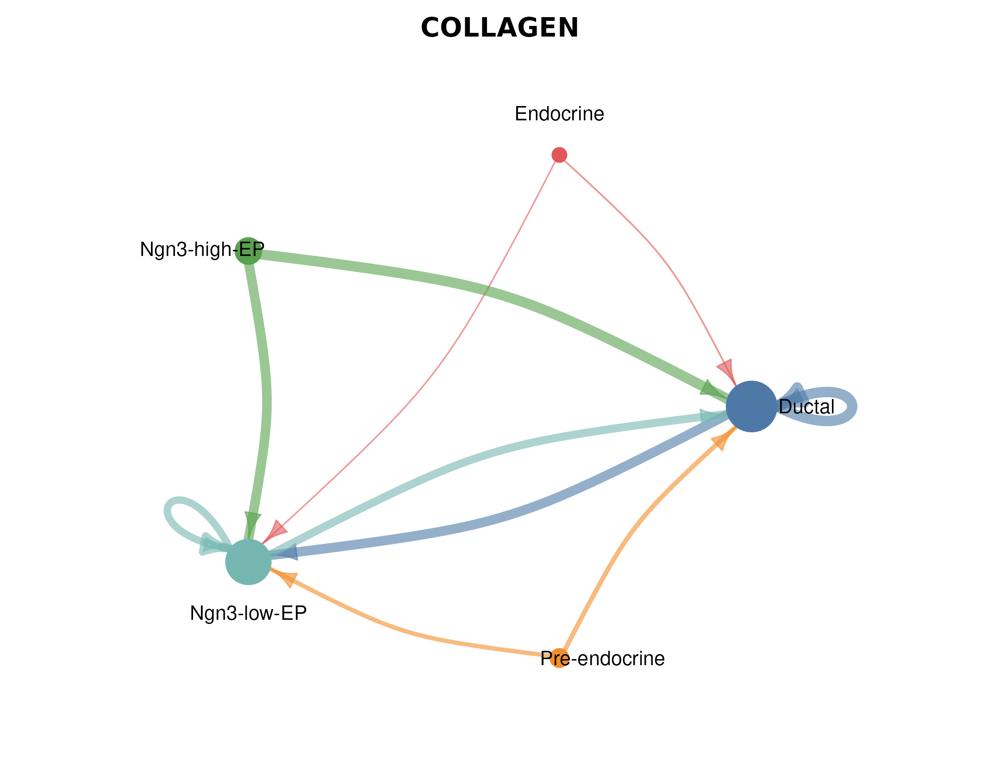
For a focused ligand, the bipartite plot shows the flow from sender
groups to the ligand, then to receptors and receiver groups. Keep
top_n small when the same ligand has many receiver
contexts.
CCCNetworkPlot(
pancreas_ccc,
method = "CCC",
plot_type = "bipartite",
ligand = "Igf2",
top_n = 6,
node_size = 4,
cell_palcolor = ccc_cell_pal,
link_palcolor = ccc_cell_pal,
font.size = 8,
legend.position = "bottom",
legend.direction = "horizontal",
theme_args = ccc_theme_args
)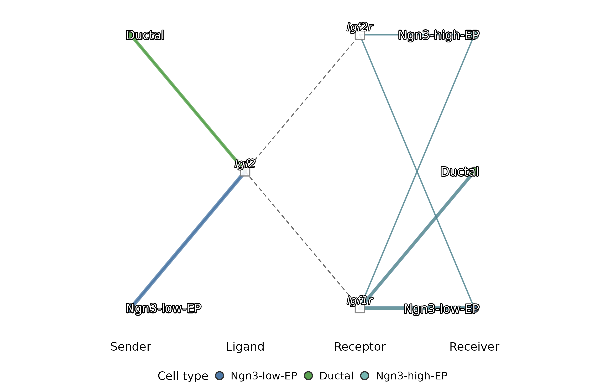
Use a single ligand-receptor pair when the biological question is
already specific. The pair name should match
interaction_name, pair_lr, or
interaction_label in
pancreas_ccc@tools$CCC$long_table.
CCCNetworkPlot(
pancreas_ccc,
method = "CCC",
plot_type = "individual_lr",
signaling = "IGF",
pairLR.use = "Igf2 - Igf1r",
display_by = "interaction",
top_n = 8,
node_size = 7,
cell_palcolor = ccc_cell_pal,
link_palcolor = ccc_cell_pal,
font.size = 9,
label.size = 3,
theme_args = ccc_theme_args
)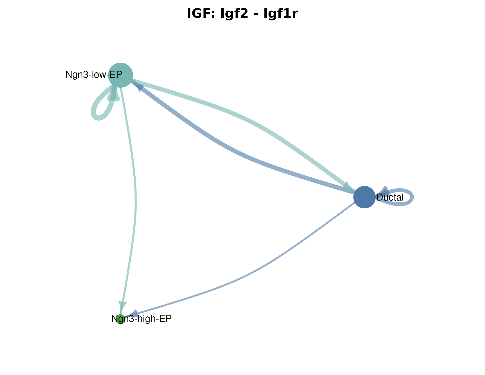
The dense circle or chord variants are still useful for interactive
inspection, but they are intentionally not drawn here because the full
pancreas_sub network is too dense for a static article
figure:
CCCNetworkPlot(
pancreas_ccc,
method = "CCC",
plot_type = "circle",
display_by = "aggregation",
value = "sum",
top_n = 8
)
CCCNetworkPlot(
pancreas_ccc,
method = "CCC",
plot_type = "chord",
display_by = "aggregation",
top_n = 8
)Method-Specific R Workflows
Use method-specific wrappers when you need parameters or outputs that are not part of the unified scheduler. CellChat is useful for pathway-level communication and pathway role plots:
pancreas_cellchat <- RunCellChat(
pancreas_ccc,
group.by = "CellType",
species = "Mus_musculus",
min.cells = 10
)LIANA is useful when you want several ligand-receptor scoring methods and a consensus-style table:
pancreas_liana <- RunLIANA(
pancreas_ccc,
group.by = "CellType",
method = c("natmi", "connectome", "logfc", "cellphonedb"),
resource = "Consensus",
min_cells = 5
)
liana_tbl <- ccc_to_liana(pancreas_liana, method = "LIANA")For condition comparisons, store the condition in metadata and run CellChat per condition. The comparison output can then be used by differential heatmaps, differential networks, and pathway ranking plots.
pancreas_cmp <- RunCellChat(
pancreas_ccc,
group.by = "CellType",
group_column = "Condition",
group_cmp = list(c("ConditionA", "ConditionB")),
species = "Mus_musculus"
)Link Ligands to Downstream Targets
Use NicheNet when the question is no longer “which cell types communicate?” but “which sender ligands may explain receiver target-gene changes?”. This requires a receiver, sender groups, and either a condition comparison or a custom target gene set.
pancreas_nn <- RunNichenetr(
pancreas_ccc,
group.by = "CellType",
receiver = "Ductal",
sender = "all",
condition.by = "Condition",
condition_oi = "ConditionA",
condition_reference = "ConditionB",
mode = "aggregate_cluster_de",
species = "Mus_musculus"
)Export R Results
Export a LIANA-style table from the unified CCC result when you want a portable result table for downstream workflows without rebuilding method-specific objects by hand.
liana_res <- ccc_to_liana(
pancreas_ccc,
method = "CCC",
score_col = "score",
pvalue_col = "pvalue"
)
head(liana_res)
#> source target ligand_complex receptor_complex score pvalue
#> 1 Ductal Ductal Agrn Dag1 0.0012782325 0.00
#> 2 Ductal Ductal Cdh1 Cdh1 0.0323255724 0.00
#> 3 Ductal Ductal Cdh3 Cdh3 0.0009078211 0.00
#> 4 Ductal Ductal Cholesterol-DHCR7 Rorc 0.0007003888 0.01
#> 5 Ductal Ductal Cldn3 Cldn3 0.1602736475 0.00
#> 6 Ductal Ductal Col2a1 Sdc1 0.0012412129 0.00
#> interaction_name_2 interacting_pair pair_lr
#> 1 Agrn - Dag1 Agrn_Dag1 Agrn-Dag1
#> 2 Cdh1 - Cdh1 Cdh1_Cdh1 Cdh1-Cdh1
#> 3 Cdh3 - Cdh3 Cdh3_Cdh3 Cdh3-Cdh3
#> 4 Cholesterol-DHCR7 - Rorc Cholesterol-DHCR7_Rorc Cholesterol-DHCR7-Rorc
#> 5 Cldn3 - Cldn3 Cldn3_Cldn3 Cldn3-Cldn3
#> 6 Col2a1 - Sdc1 Col2a1_Sdc1 Col2a1-Sdc1
#> interaction_name classification method dataset
#> 1 AGRN_DAG1 AGRN CellChat ALL
#> 2 CDH1_CDH1 CDH CellChat ALL
#> 3 CDH3_CDH3 CDH CellChat ALL
#> 4 Cholesterol-Cholesterol-DHCR7_RORC Cholesterol CellChat ALL
#> 5 CLDN3_CLDN3 CLDN CellChat ALL
#> 6 COL2A1_SDC1 COLLAGEN CellChat ALL
#> specificity_rank magnitude_rank aggregate_rank
#> 1 245 245 0.00
#> 2 59 59 0.00
#> 3 266 266 0.00
#> 4 268 268 0.01
#> 5 14 14 0.00
#> 6 248 248 0.00What to Report
A compact CCC report should include:
- the object, assay, expression layer, and sender-receiver annotation;
- the method or methods used, including species and ligand-receptor resource;
- the significance threshold and expression fraction cutoff;
- the top sender-receiver pairs by interaction count or score;
- the top ligand-receptor pairs, separated from aggregate cell-pair summaries;
- whether the result is steady-state communication or a condition comparison;
- downstream target interpretation only when using a method designed for that question, such as NicheNet.
Keep the first pass broad and conservative. Use focused ligand, receptor, pathway, and downstream target analyses only after the global sender-receiver structure is stable.